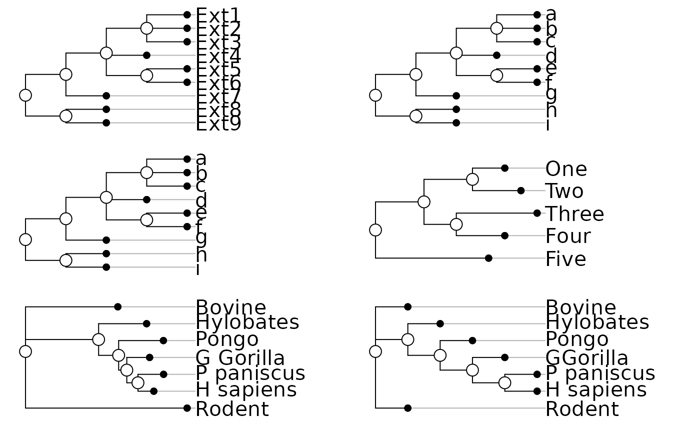
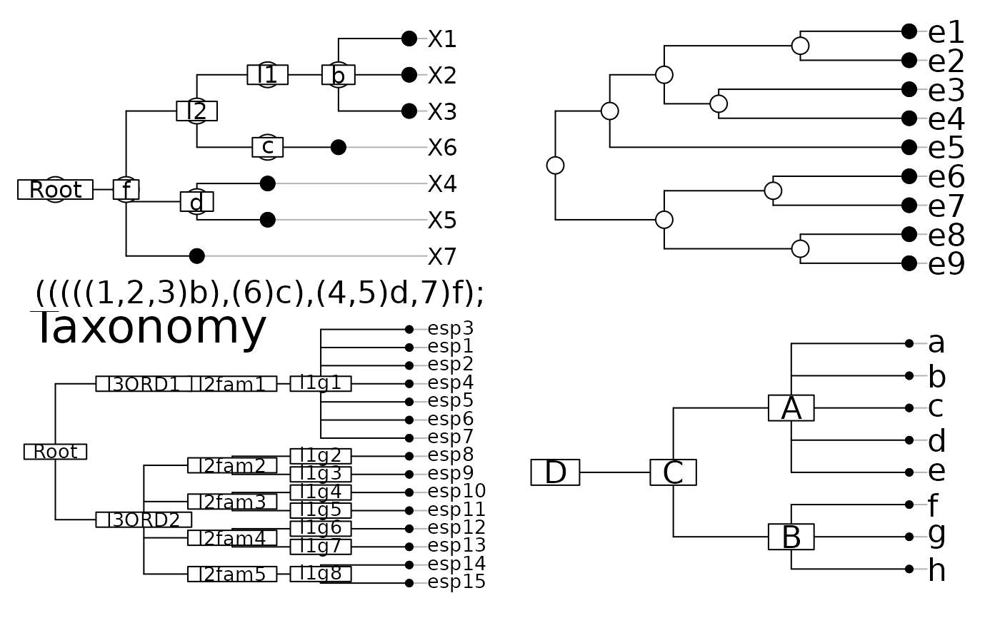

Plot phylogenies
plot.phylog.Rdplot.phylog draws phylogenetic trees as linear dendograms. radial.phylog draws phylogenetic trees as circular dendograms. enum.phylog enumerate all the possible representations for a phylogeny.
Usage
# S3 method for class 'phylog'
plot(x, y = NULL, f.phylog = 0.5, cleaves = 1, cnodes = 0,
labels.leaves = names(x$leaves), clabel.leaves = 1,
labels.nodes = names(x$nodes), clabel.nodes = 0, sub = "",
csub = 1.25, possub = "bottomleft", draw.box = FALSE, ...)
radial.phylog(phylog, circle = 1, cleaves = 1, cnodes = 0,
labels.leaves = names(phylog$leaves), clabel.leaves = 1,
labels.nodes = names(phylog$nodes), clabel.nodes = 0,
draw.box = FALSE)
enum.phylog(phylog, no.over = 1000)Arguments
- x, phylog
an object of class
phylog- y
a vector which values correspond to leaves positions
- f.phylog
a size coefficient for tree size (a parameter to draw the tree in proportion to leaves label)
- circle
a size coefficient for the outer circle
- cleaves
a character size for plotting the points that represent the leaves, used with
par("cex")*cleaves. If zero, no points are drawn- cnodes
a character size for plotting the points that represent the nodes, used with
par("cex")*cnodes. If zero, no points are drawn- labels.leaves
a vector of strings of characters for the leaves labels
- clabel.leaves
a character size for the leaves labels, used with
par("cex")*clabel.leaves. If zero, no leaves labels are drawn- labels.nodes
a vector of strings of characters for the nodes labels
- clabel.nodes
a character size for the nodes labels, used with
par("cex")*clabel.nodes. If zero, no nodes labels are drawn- sub
a string of characters to be inserted as legend
- csub
a character size for the legend, used with
par("cex")*csub- possub
a string of characters indicating the sub-title position ("topleft", "topright", "bottomleft", "bottomright")
- draw.box
if TRUE draws a box around the current plot with the function
box()- ...
further arguments passed to or from other methods
- no.over
a size coefficient for the number of representations
Details
The vector y is an argument of the function plot.phylog that ensures to plot one of the possible representations of a phylogeny.
The vector y is a permutation of the set of leaves {1,2,...,f} compatible with the phylogeny's topology.
Value
The function enum.phylog returns a matrix with as many columns as leaves. Each row gives a permutation of the set of leaves {1,2,...,f} compatible with the phylogeny's topology.
Author
Daniel Chessel
Sébastien Ollier sebastien.ollier@u-psud.fr
Examples
data(newick.eg)
par(mfrow = c(3,2))
for(i in 1:6) plot(newick2phylog(newick.eg[[i]], FALSE),
clea = 2, clabel.l = 3, cnod = 2.5)

par(mfrow = c(1,1))
if (FALSE) { # \dontrun{
par(mfrow = c(1,2))
plot(newick2phylog(newick.eg[[11]], FALSE), clea = 1.5,
clabel.l = 1.5, clabel.nod = 0.75, f = 0.8)
plot(newick2phylog(newick.eg[[10]], FALSE), clabel.l = 0,
clea = 0, cn = 0, f = 1)
par(mfrow = c(1,1))
} # }
par(mfrow = c(2,2))
w7 <- newick2phylog("(((((1,2,3)b),(6)c),(4,5)d,7)f);")
plot(w7,clabel.l = 1.5, clabel.n = 1.5, f = 0.8, cle = 2,
cnod = 3, sub = "(((((1,2,3)b),(6)c),(4,5)d,7)f);", csub = 2)
w <- NULL
w[1] <- "((((e1:4,e2:4)a:5,(e3:7,e4:7)b:2)c:2,e5:11)d:2,"
w[2] <- "((e6:5,e7:5)e:4,(e8:4,e9:4)f:5)g:4);"
plot(newick2phylog(w), f = 0.8, cnod = 2, cleav = 2, clabel.l = 2)
data(taxo.eg)
w <- taxo2phylog(as.taxo(taxo.eg[[1]]))
plot(w, clabel.lea = 1.25, clabel.n = 1.25, sub = "Taxonomy",
csub = 3, f = 0.8, possub = "topleft")
provi.tre <- "(((a,b,c,d,e)A,(f,g,h)B)C)D;"
provi.phy <- newick2phylog(provi.tre)
plot(provi.phy, clabel.l = 2, clabel.n = 2, f = 0.8)

par(mfrow = c(1,1))
if (FALSE) { # \dontrun{
par(mfrow = c(3,3))
for (j in 1:6) radial.phylog(newick2phylog(newick.eg[[j]],
FALSE), clabel.l = 2, cnodes = 2)
radial.phylog(newick2phylog(newick.eg[[7]],FALSE), clabel.l = 2)
radial.phylog(newick2phylog(newick.eg[[8]],FALSE), clabel.l = 0,
circle = 1.8)
radial.phylog(newick2phylog(newick.eg[[9]],FALSE), clabel.l = 1,
clabel.n = 1, cle = 0, cnode = 1)
par(mfrow = c(1,1))
data(bsetal97)
bsetal.phy = taxo2phylog(as.taxo(bsetal97$taxo[,1:3]), FALSE)
radial.phylog(bsetal.phy, cnod = 1, clea = 1, clabel.l = 0.75,
draw.box = TRUE, cir = 1.1)
par(mfrow = c(1,1))
} # }
if (FALSE) { # \dontrun{
# plot all the possible representations of a phylogenetic tree
a <- "((a,b)A,(c,d,(e,f)B)C)D;"
wa <- newick2phylog(a)
wx <- enum.phylog(wa)
dim(wx)
par(mfrow = c(6,8))
fun <- function(x) {
w <-NULL
lapply(x, function(y) w<<-paste(w,as.character(y),sep=""))
plot(wa, x, clabel.n = 1.25, f = 0.75, clabel.l = 2,
box = FALSE, cle = 1.5, sub = w, csub = 2)
invisible()}
apply(wx,1,fun)
par(mfrow = c(1,1))
} # }